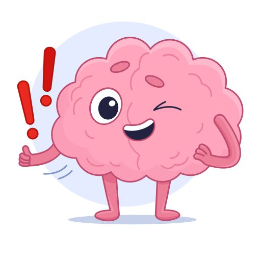
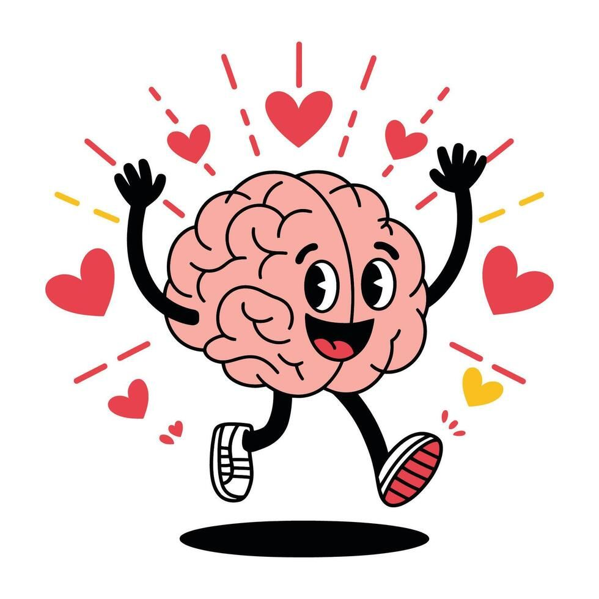

Topik Utama
 Mental Health
Mental Health
Apa itu Kesehatan Mental?
Memahami pengertian, komponen, dan pentingnya kesehatan mental dalam kehidupan sehari-hari.
 Stres & Kecemasan
Stres & Kecemasan
Mengenal Stres & Kecemasan
Pelajari tanda-tanda stres dan kecemasan serta cara menghadapinya secara sehat.

DepresiMemahami Depresi
Depresi bukan sekadar sedih. Kenali gejalanya, penyebab, dan langkah awal mencari bantuan.
 Tips & Edukasi
Tips & Edukasi
Tips Menjaga Kesehatan Mental
Panduan praktis menjaga kesehatan mental untuk mahasiswa dan remaja.
 Minta Bantuan
Minta Bantuan
Kapan Harus Mencari Bantuan?
Tanda-tanda kamu perlu bicara dengan profesional dan cara memulai langkah tersebut.

StigmaMelawan Stigma Mental
Mengapa stigma terhadap kesehatan mental masih ada dan bagaimana kita mengubahnya.